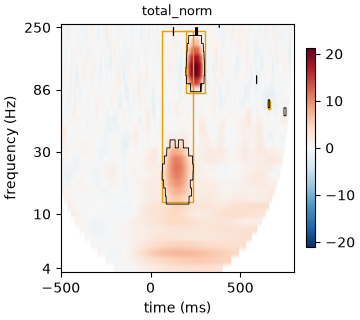

Note
Go to the end to download the full example code.
16: Time-frequency responses¶
Parameterise induced oscillatory bursts into zones, data-driven or from a published atlas.
Introduction¶
Not every response shows up in the average curve. An induced response is an oscillation whose phase is random from trial to trial: it adds power at some frequency and time, but it averages to nearly zero, so the tutorials so far would miss it. You see it only in the power of single trials, on a time-frequency map.
evoparam.tf parameterises that map. Instead of one number per pixel, it finds a few
zones: rectangles in time and frequency where the power clearly rises or falls, each
with a centre, an extent, a strength and a p-value. Two ways to get the zones:
data-driven: let evoparam find the zones from the map itself (NMF);
published: score the exact zones a paper defined, for example the Brinyark 2026 atlas (theta, alpha, beta, low and high gamma, in an N1 and an N2 window).
It also removes the trap where a sharp evoked N1 leaks broadband power into high gamma: the fitted N1 is subtracted first, so a high-gamma zone is a real oscillation, not the edge of a spike.
# Import what we need
import warnings
from evoparam import plots
from evoparam.sim import simulate_bursts
from evoparam.tf import list_published_zones, tf_fit
The data¶
simulate_bursts adds induced bursts to noise, with a known truth. Each burst is a
cosine under a smooth envelope, at a given frequency, centre time and duration, with a
random phase per trial (so it is invisible in the average). We put two bursts on one
channel: a beta burst (20 Hz) early, and a high-gamma burst (120 Hz) later.
bursts = [
{"freq": 20.0, "centre": 0.15, "duration": 0.15, "amplitude": 25.0, "channel": 0},
{"freq": 120.0, "centre": 0.25, "duration": 0.12, "amplitude": 30.0, "channel": 0},
]
trials, truth = simulate_bursts(
40, n_channels=1, sfreq=1000.0, bursts=bursts, noise_sd=10.0, seed=0,
) # fmt: skip
print(trials)
<TrialSet | 40 trials × 1 channels × 1400 times, -0.600 – 0.799 s, 1000 Hz, uV, human, erp>
Data-driven zones¶
tf_fit first makes the time-frequency map (a Morse wavelet by default), normalises it
against the baseline in decibels, and keeps only the pixels that beat a permutation test.
With zones="auto" it then factorises the significant map into a few zones. freqs
is (low, high, n): here 4 to 250 Hz in 32 steps.
with warnings.catch_warnings():
warnings.simplefilter("ignore")
tf = tf_fit(trials, freqs=(4, 250, 32), zones="auto", max_zones=4,
n_permutations=500, random_state=0) # fmt: skip
columns = ["zone_id", "freq_centroid", "freq_extent", "time_centroid", "p_value",
"energy_fraction"]
print(tf.zones[columns].round(3).to_string(index=False))
zone_id freq_centroid freq_extent time_centroid p_value energy_fraction
0 20.482 0.354 0.15 0.000 0.518
1 127.914 0.287 0.25 0.000 0.479
2 65.860 0.000 0.66 0.001 0.001
The two bursts come back as two zones: one near 20 Hz around 150 ms, one in high gamma
around 250 ms. freq_centroid and time_centroid are where each zone sits,
energy_fraction is how much of the significant power it holds, and p_value is its
significance under the permutation null. The figure shows the total map, the
N1-corrected footprint and the residual.
fig = plots.plot_tf(tf)

Published zones¶
When a paper defines fixed zones, score those exact boxes instead of finding your own.
list_published_zones is the registry; the Brinyark 2026 atlas splits the map into
theta, alpha, beta, low gamma and high gamma, each in an early (N1) and a late (N2)
window.
zones = list_published_zones()
zone_columns = ["name", "f_low", "f_high", "t_start", "t_end", "verified"]
print(zones[zone_columns].head(6).to_string(index=False))
name f_low f_high t_start t_end verified
brinyark2026_delayed_high_gamma 50.0 250.0 0.050 0.50 True
brinyark2026_GhN2 50.0 250.0 0.050 0.50 True
brinyark2026_TN1 4.0 8.0 0.015 0.05 False
brinyark2026_TN2 4.0 8.0 0.050 0.50 False
brinyark2026_AN1 8.0 13.0 0.015 0.05 False
brinyark2026_AN2 8.0 13.0 0.050 0.50 False
Pass zones="published:<name>" to score one. Our 120 Hz burst at 250 ms sits in the
delayed high-gamma zone (brinyark2026_GhN2: 50 to 250 Hz, 50 to 500 ms). The
zones table gives the box, and zone_metrics gives what was measured inside it:
the power value (dB), a t-statistic, a p_value and the fraction of the box that
is significant.
with warnings.catch_warnings():
warnings.simplefilter("ignore")
tf_pub = tf_fit(trials, freqs=(4, 250, 32), zones="published:brinyark2026_GhN2",
n_permutations=500, random_state=0) # fmt: skip
box_columns = ["zone_id", "f_low", "f_high", "t_start", "t_end"]
print(tf_pub.zones[box_columns].round(3).to_string(index=False))
print()
metrics = ["zone", "channel", "value", "t", "p_value", "fraction_significant"]
print(tf_pub.zone_metrics[metrics].round(4).to_string(index=False))
zone_id f_low f_high t_start t_end
0 50.0 250.0 0.05 0.5
zone channel value t p_value fraction_significant
brinyark2026_GhN2 c0 1.2412 16.4361 0.0 0.1076
Note
Only the delayed-high-gamma zone is marked verified in the registry; the others
are read from the article but not yet checked against evoparam’s own recovery test,
so they need allow_unverified=True. tf_compare contrasts the maps of two
conditions with a cluster test, and tf_fit(..., by_trial=True) gives the zone
power per trial, to correlate with dose, distance or behaviour as in tutorial 09.
Conclusion¶
Time-frequency parameterisation finds the responses that the average hides: induced
bursts of power. tf_fit turns the map into a few zones with timing, frequency and a
p-value, either data-driven or from a published atlas, and it subtracts the fitted N1
first so a high-gamma zone is a true oscillation and not the leakage of a sharp evoked
peak.
Total running time of the script: (0 minutes 4.293 seconds)